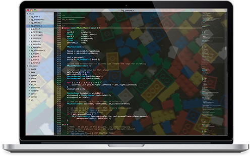

The All in one framework for frontend
The web is growing so fast and there is always new plugins, tendencies and even more devices making the full process more complex and slow. Frontend Core, a mix of technology that make us 200% productive and be prepared for the future.
Download & Installation
Current release 1.4 Read the docs
How to & Demos
